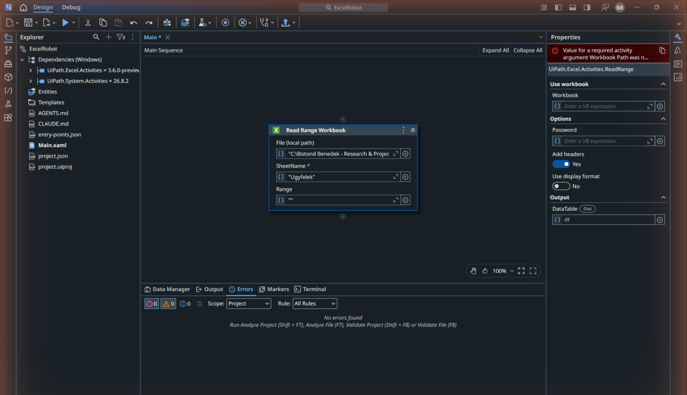
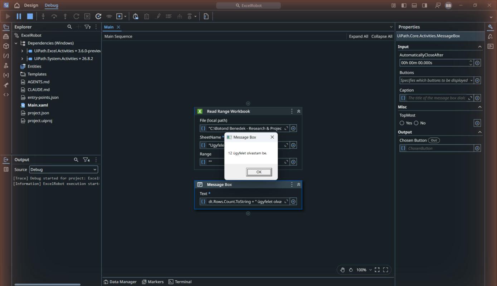
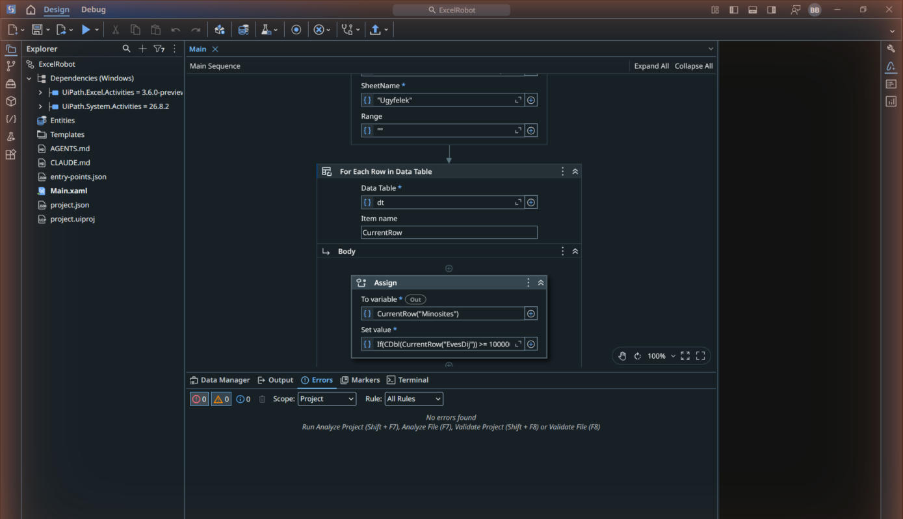
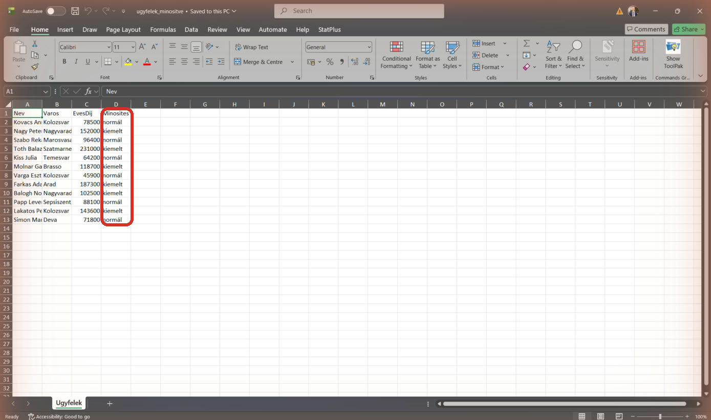

Excelből Excelbe: beolvas, dönt, visszaír
Read Range, For Each Row, Assign, Write Range: a vállalati robotok leggyakoribb mintája, végig a te gépeden.
- a robotod beolvas egy Excel-táblát, soronként dönt, és az eredményt visszaírja egy új Excel-fájlba;
- ismered a DataTable fogalmát: így él egy tábla a robot memóriájában;
- a hetedik és a nyolcadik nap feladatainak is ez a minta a gerince.
A leggyakoribb irodai automatizálás: Excelből Excelbe
A vállalati robotok kenyere az Excel: lista jön valahonnan, soronként kell vele csinálni valamit, és az eredményt Excelben várják vissza. A gyakorlatunk: a Meridian 12 ügyfelének listájából a robot kiszámolja, ki számít kiemelt ügyfélnek, és minősített listát ír ki.
Töltsd le a munkafájlt a BPA_kurzus mappádba:
- Workbook-aktivitások (Read Range Workbook, Write Range Workbook): magát a fájlt olvassák, nem kell hozzá telepített Excel. Ma ezeket használjuk, mert mindenki gépén működnek.
- Use Excel File aktivitás-család: a telepített Excelt vezérli (látod is megnyílni); akkor kell, ha élő Excel-funkciókat (képlet-újraszámolás, diagram) használnál. A következő blokk sablonja ezt használja.
- Új projekt: a kezdőképernyőn Process, név: ExcelRobot, Create.
- Add hozzá (Ctrl+Shift+T): Read Range Workbook (a találatlistában: Read Range Workbook, UiPath.Excel.Activities; ha a csomag hiányzik, telepítsd a Manage Packages ablakban). A kártyán a File mező végén kattints a plusz jelre, válaszd a Use Local File lehetőséget, és add meg a letöltött ugyfelek.xlsx teljes útvonalát idézőjelben (vagy tallózd ki a mappa-ikonnal); SheetName:
"Ugyfelek"; a Range maradjon üres (""): ez a teljes táblát jelenti.
A Read Range Workbook kártya kitöltve: File (local path) az ugyfelek.xlsx útvonalával, SheetName Ugyfelek, üres Range; a Properties-ben a dt kimenet - A Properties / Data Manager panelen az Output → DataTable mezőben hozz létre
dtnevű,System.Data.DataTabletípusú változót. A Add headers kapcsoló legyen bekapcsolva: az első sor oszlopneveket ad, nem ügyféladat. A mellékletben már létezik az üresMinositesoszlop. - Ellenőrizzük, mit olvastunk: adj hozzá egy Message Box-ot, Text:
dt.Rows.Count.ToString + " ügyfelet olvastam be.", és futtasd (Ctrl+F5). 12-t kell írnia. Ha megvan, a Message Boxot töröld (kattints a kártya fejlécére, Delete).
Az ellenőrző futás: 12 ügyfelet olvastam be - Most a döntés. Add hozzá: For Each Row in Data Table, és a kártya Data Table mezőjébe írd: dt. Ez soronként végigmegy a táblán; az aktuális sort a CurrentRow névvel éred el (Item name mező).
- A cikluson belülre (Body) add hozzá: Assign (értékadás). A To variable mezőbe:
CurrentRow("Minosites"), a Set value mezőbe:If(CDbl(CurrentRow("EvesDij")) >= 100000, "kiemelt", "normál"). Magyarul: ha az éves díj legalább 100 000, a Minosites oszlopba az kerül, hogy kiemelt, különben normál.
A For Each Row in Data Table (Data Table: dt, Item name: CurrentRow), a Body-ban az Assign a két kifejezéssel - A ciklus után add hozzá a Write Range Workbook aktivitást. A Workbook path / File mezőben add meg az új fájl teljes útvonalát kifejezésként, például
"C:\Users\Te\Documents\BPA_kurzus\ugyfelek_minositve.xlsx"; a mappa előbb létezzen. Új fájlhoz nem kell meglévő fájlt tallózni. SheetName:"Ugyfelek", StartingCell:"A1", DataTable:dt, Add headers: bekapcsolva. Az eredeti ugyfelek.xlsx fájlt hagyd meg. - A végére egy Message Box:
"Kész: ugyfelek_minositve.xlsx". Futtasd.
A futás után a BPA_kurzus mappádban ott az ugyfelek_minositve.xlsx, benne a Minosites oszlop kitöltve: a 12-ből 6 ügyfél kiemelt. (Képen lent; ellenőrizd a sajátodban is.)
Ha mást látsz: ha a Minosites oszlop üres maradt, az Assign a cikluson kívülre került, vagy az oszlopnév elgépelt (a fejléceknek betűre egyezniük kell).

Először a kimenet teljes útvonalában cseréld a fájlnevet ugyfelek_minositve_v2.xlsx-re. Ezután emeld a feltételben a határt 150 000-re, és futtasd újra a robotot. Így az eredeti, 100 000-es határral készült fájl is megmarad. Ellenőrizd, hány kiemelt ügyfél lett az új változatban.
Eredményellenőrzés a két határhoz
100 000-es határnál 6, 150 000-es határnál 3 ügyfél kiemelt. Az utóbbi három éves díja 152 000, 231 000 és 187 300. Mindkét fájlban 12 adatsor és egy fejlécsor maradjon.
- Fájlnév-elgépelés vagy hiányzó idézőjel a Workbook path mezőben: a hibaüzenet file not found lesz.
- Az EvesDij oszlopban szöveg van szám helyett: a CDbl elszáll; nézd meg az Excelben, nem maradt-e szóköz vagy szöveges cella.
- A kimeneti fájl nyitva van Excelben futtatás közben: a robot nem tudja írni; zárd be, és futtasd újra.
- Az Assign a For Each Row testében legyen. A cikluson kívül a
CurrentRowtöbbnyire nem érhető el, ezért kifejezés- vagy hatókörhibát kapsz. Nem az utolsó sor önálló minősítése a kívánt működés.
- Ártáblák, készletlisták vagy HR-listák soronkénti minősítése is erre a mintára épülhet; az oszlopneveket, adattípusokat és üzleti feltételt az adott feladathoz kell igazítani.
- A hetedik napon számla-adatokat gyűjtünk így táblába; a nyolcadik napon a 18 000 soros kárlistát szűrjük ugyanezzel a párossal.
- A DataTable sorokat és típusos oszlopokat tárol a memóriában. Nem Excel-munkafüzet: a cellaformázást, diagramokat és az Excel minden funkcióját nem viszi magával.